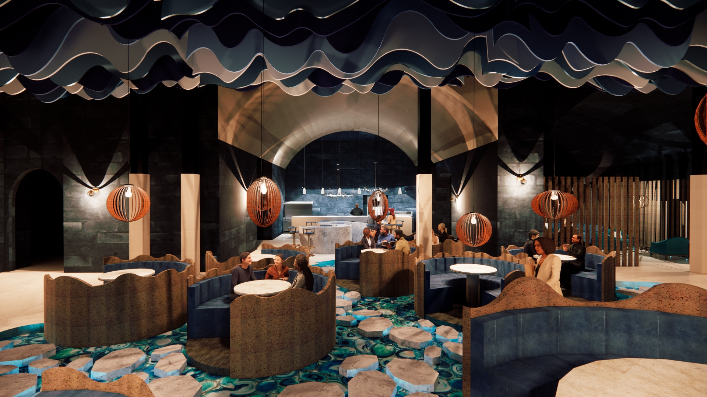
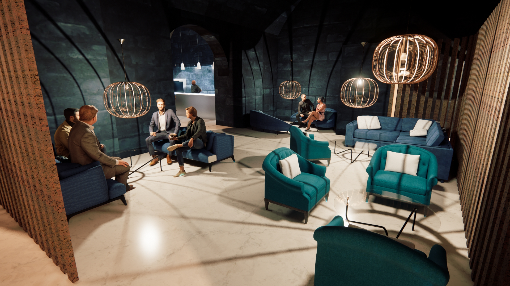
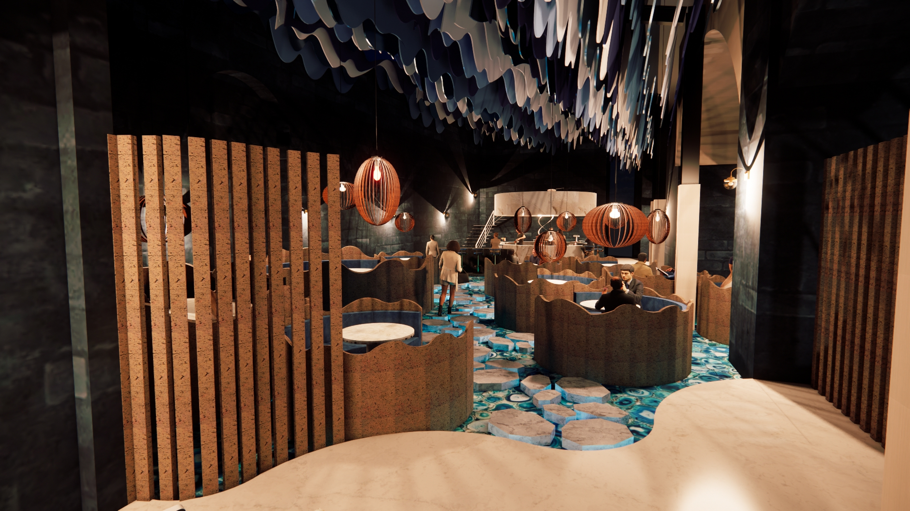

Interior Designer

Manzi Seafood Restaurant explores material layering, ambient lighting, and refined detailing to create a warm yet elevated dining environment. The design focuses on texture, contrast, and spatial rhythm, combining natural finishes with controlled lighting to enhance atmosphere and guest experience.

